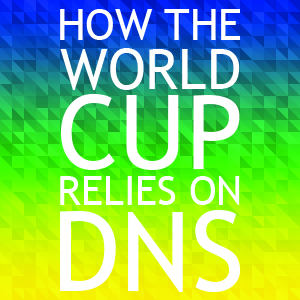

Jun 17, 2014 By Chris Baker
How The World Cup Relies On DNS
“The FIFA World Cup is the world’s most widely viewed sporting event; an estimated 715.1 million people watched the final match of the 2006 FIFA World Cup held in Germany and the 2010 event in South Africa was broadcast to 204 countries on 245 different channels. Inside the stadiums, a total of 3,170,856 spectators attended the 64 matches an average of 49,670 per match and the third highest aggregate attendance behind USA 1994 and Germany 2006.” — Fifa
People around the world want to consume a data stream generated at 12 different locations around Brazil. An expert squad of audio visual professionals will be deployed to these stadiums. They will establish their own physical networking infrastructure with which they will broadcast events occurring in Brazil to the UK, USA, Russia, China … The World!
Read MoreJun 16, 2014 By Dyn News

Dyn Launches New Community Relations Team
Names former Manchester Mayor Bob Baines as Director
Manchester, NH (June 16, 2014) – Dyn, the worldwide leader in Internet performance, announced today that Bob Baines, former Mayor of Manchester and Principal of West High School, will serve as Director of Dyn’s newly formed Community Relations department, which will be an evolution of DynCares, the company’s longtime philanthropic arm.
Read MoreJun 13, 2014 By Phil Hochmuth

Dyn Research: CDN Adoption By The Numbers
Content delivery network (CDN) deployments are surging as organizations from web and Fortune 1000 enterprises down to startups and SMBs, connect with customers and derive more revenue from the web.
Since CDNs are such an essential component to many Dyn customers’ web architectures, we recently researched CDN adoption trends across a range of markets. Working with our market intelligence partner Datanyze, we found large growth in CDN adoption across a spectrum of markets, with the types of CDN providers used varying from market to market.
Read MoreJun 12, 2014 By Tyler Gutierrez

How The Internet Gets You To The World Cup
If you’re excited for the kickoff of the FIFA World Cup today, you’re not alone. In 2010, over 260 million fans tuned into the action going down in South Africa in the comfort of their own homes. This year, Brazil is expecting over half a million foreign visitors for the tournament, one of the biggest foreign turnouts to date.
If you’re one of the lucky ones who is currently on your way to Brazil or already watching the first match, you probably had to use a bunch of different website and apps to get you on the road. From buying tickets to booking air travel, the World Cup depends a lot upon Internet performance and everything working just right so that fans can get to where they want to go.
Read MoreJun 10, 2014 By Paul Mailhot

The History Behind Dyn’s Upcoming New Sign
As a hyper-growth company, many people believe that Dyn spends a lot of time looking toward the future. While that is true, we also have a great appreciation for our past and our history.
We did not stumble upon Manchester, New Hampshire because it is the tech capital of the world. We built our business here because it is our home and we are proud of its strong history and want to play a role in its future.
Read MoreJun 6, 2014 By Stephen Wheeler

With Reputation Management, The Most Reputable Sender Is On Your Team
As the Most Reputable Sender in the world, spreading the knowledge of proper reputation management is one of my life goals. With over 20% of email ending up in the SPAM folder every day, I strive to make sure that Dyn clients end up in that 80%, and the fastest way there is with a good reputation.
Even if businesses are aware that their reputation is important, they might not have the tools to properly monitor just how well or how poorly they are doing. Most may not even know when their reputation is in jeopardy. Just because you had a good reputation 2 weeks or a month ago doesn’t mean that something hasn’t drastically changed.
Read MoreJun 5, 2014 By Kyle York
Business, Community, Culture: What Is Your Impact?
In a year that has been full of good news, I was thrilled to announce more of it at the recent abiHUB Party At Arms fundraising event here in Manchester, NH – news that is going to make an impact in our state.
The abiHUB, an organization that Dyn has supported for years and that I am proud to be the board chair of, purchased the assets of the Portsmouth, NH, co-working space Alpha Loft. We hired their founder/owner Joshua Cyr and will be rebranding the abiHUB to Alpha Loft. We hope and think this move will continue to spur and support startups throughout the Granite State, creating a big impact for NH businesses in the process.
Read MoreJun 5, 2014 By Ali Rafieymehr

Students Gain First-Hand Tech Experience At Dyn’s Hackademy Weekend
This article was originally published on BetaBoston.
The tech industry has a unique crisis on its hands. While more and more startups are popping up across the United States, the number of qualified students fit for those jobs is decreasing. Computer science student participation at the high school level is decreasing. Associates degrees in computer and information studies plummeted 11 percent between 2003 and 2012. And the majority of those who do graduate in the field move to places like New York and Silicon Valley.
{kind=link}
So what’s a growing Manchester, New Hampshire tech company with a serious appetite like Dyn to do?
Read MoreJun 4, 2014 By Dyn News
Dyn Releases New Email Delivery Service
Reputation Management proactively improves sender reputation
Manchester, NH (June 4, 2014) – Dyn, the worldwide leader in Internet performance, announced today the release of a new Message Management service: Reputation Management, which proactively improves and protects a brand’s sender reputation leveraging Dyn’s industry-leading expertise and tools. Adding this to Dyn’s Email Delivery product helps increase inbox placement and drives user engagement for Dyn’s customers’ business-critical, application driven email.
Read MoreJun 3, 2014 By Kelly O'Hara

QUIZ: I Have A CDN. Do I Need DNS?
If you have a CDN, you know the importance of performance, but did you know that you might be throwing away your investment by not using an independent DNS provider? Not everyone has the same requirements when it comes to their website, so sometimes it’s hard to figure out exactly which services are right for you.
Are you unsure if you need to take a second look at your DNS solution? Take this quiz to see if your website could benefit from using an independently managed DNS provider.
Read More